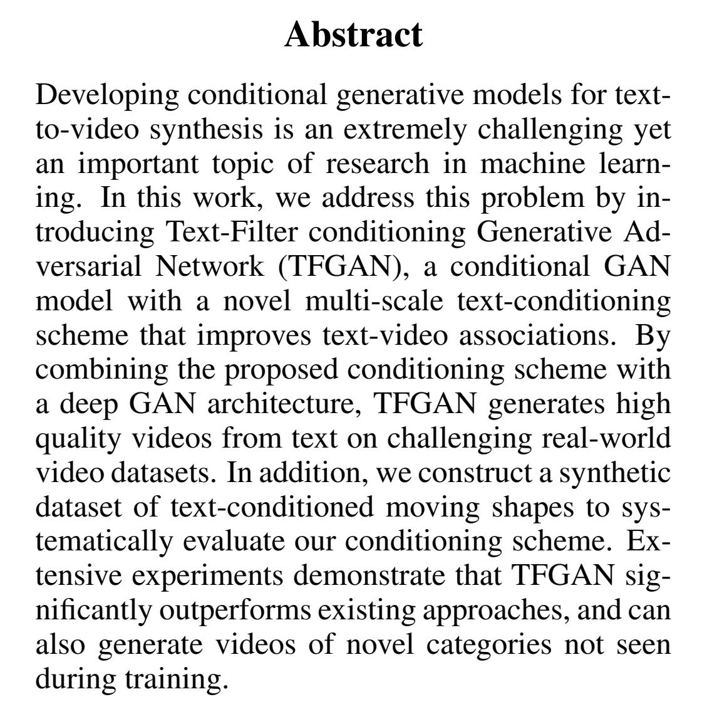

| Capture | Trans |
|---|---|
|

|
Abstract 抽象的 Developing conditional generative models for textto-video synthesis is an extremely challenging yet an important topic of research in machine learning. 开发用于文本到视频合成的条件生成模型是一个极具挑战性但也是机器学习研究的重要课题。 In this work, we address this problem by introducing Text-Filter conditioning Generative Adversarial Network (TFGAN), a conditional GAN model with a novel multi-scale text-conditioning scheme that improves text-video associations. 在这项工作中，我们通过引入文本过滤器调节生成对抗网络 (TFGAN) 来解决这个问题，TFGAN 是一种条件 GAN 模型，具有新颖的多尺度文本调节方案，可改善文本-视频关联。 By combining the proposed conditioning scheme with a deep GAN architecture, TFGAN generates high quality videos from text on challenging real-world video datasets. 通过将所提出的调节方案与深度 GAN 架构相结合，TFGAN 从具有挑战性的真实世界视频数据集上的文本生成高质量视频。 In addition, we construct a synthetic dataset of text-conditioned moving shapes to systematically evaluate our conditioning scheme. 此外，我们构建了一个文本条件移动形状的综合数据集，以系统地评估我们的条件方案。 Extensive experiments demonstrate that TFGAN significantly outperforms existing approaches, and can also generate videos of novel categories not seen during training. 大量实验表明，TFGAN 明显优于现有方法，并且还可以生成训练期间未见过的新类别视频。 |